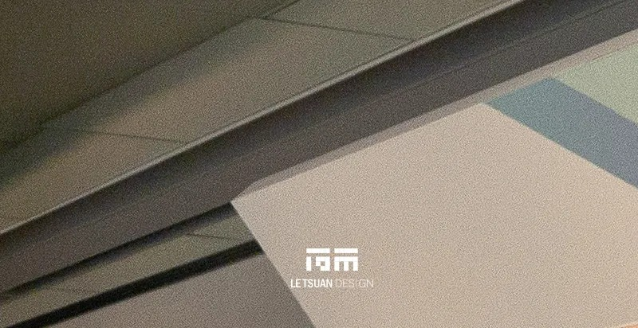
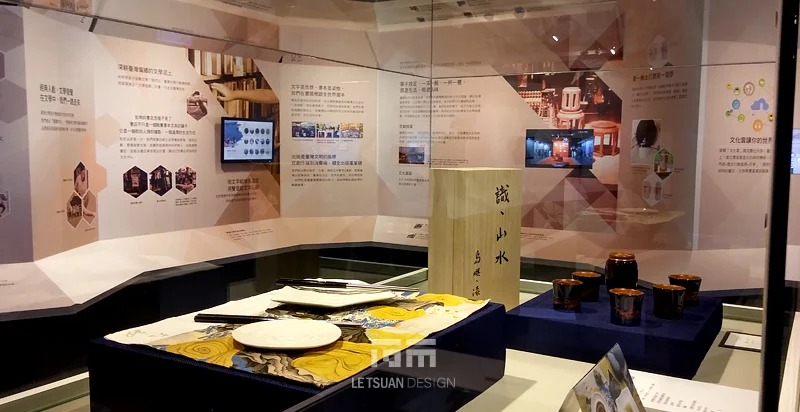
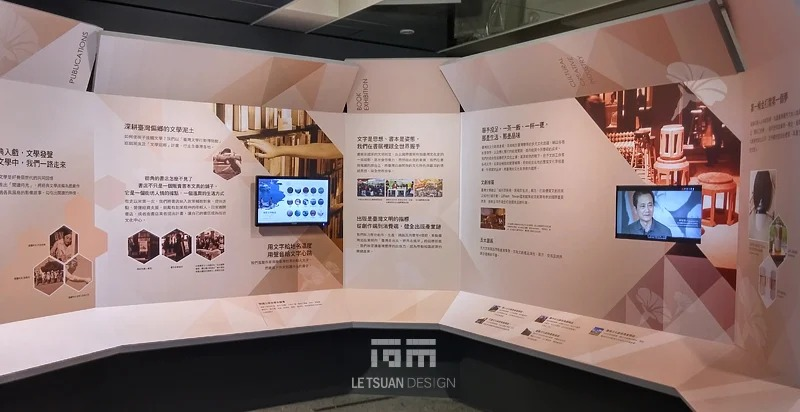
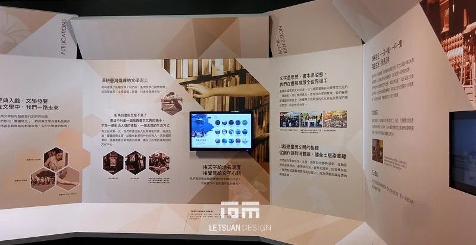
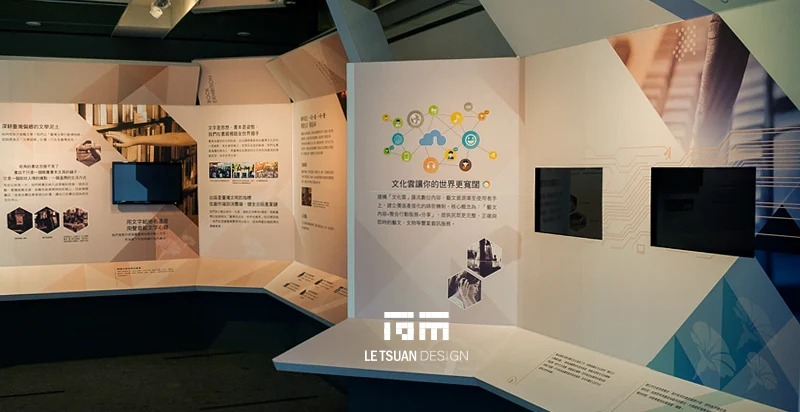
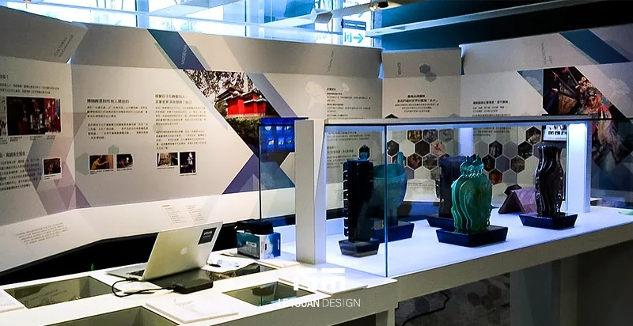
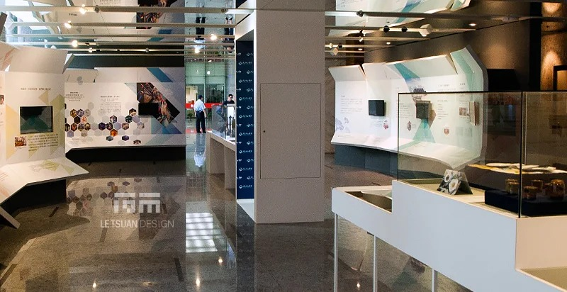

看見文化部 一段歷史，無數個日常
一、策展概念
包裹送到手上時，還只是一只封閉的箱子–外觀不透露任何訊息。要看見裡面裝了什麼，只能動手拆：沿攤線展開、攤平，讓立體的箱體還原成一張展開圖（die-line），內容才第一次完整地攤在眼前。
文化部的歷史，就是這樣一份等待拆封的包裹。從民國70年代文化建設委員會的成立，到新聞局在傳播領域的角色，再到民國101年整併升格為文化部–每一次組織調整，都是包裝結構上的一道摺線。今日轄下的各司處、各項業務，則是攤開之後真正被看見的內容。
本展以「攤開，看見文化部」為策展主軸，將「包裝結構展開圖」轉化為整個展覽的視覺語言與空間骨架。觀眾像親手拆開一份禮物，沿著動線走，見證組織沿革的摺線一一被攤平、被讀懂，最後回答那個最基本的問題：文化部到底在做什麼。
二、核心設計概念：展開圖作為敘事結構
包裝設計中的「展開圖」，是箱體攤平後的平面圖，各個面板（上蓋、側翼、底板、摺角）彼此相連卻各自獨立，摺疊時組成完整的箱體，攤開後則是可以逐頁閱讀的版面。
展覽借用這套結構，作為兩個層次的敘事骨架。
摺線＝時間軸：展開圖上的每一道摺線，對應文化部沿革中的一個關鍵時間節點（文建會成立、新聞局併入、文化部揭牌等），觀眾行走過摺線位置，即完成一段歷史的閱讀。
面板＝單位介紹：攤平後的每一個面板（上蓋、側翼、底板）分別對應文化部現行的各司處與附屬機關，歷史之外，觀眾同時看見「現在誰在管什麼」。
於是展覽用同一組視覺語言回答兩個問題：文化部從哪裡來，以及文化部現在做什麼。不需要兩套敘事系統。
三、空間動線規劃：從箱體到展開圖
展場動線依循「拆封」的心理歷程，分三個階段。
序展區｜封箱狀態
入口是一件巨型的封閉包裝箱。表面只有文化部部徽與極簡文字–內容尚未揭曉。好奇心與「即將被打開」的預期，在這裡先被建立起來。
主展區｜攤開的展開圖
穿越入口後，空間隨即展開。地面與牆面以展開圖的線性分割鋪陳，觀眾如同走在一張被攤平的箱體結構上。每經過一道「摺線」（地面或牆面的分隔線設計），即進入下一個歷史階段；每一片面板，則是一個單位的獨立展區。
依文化部現行組織架構，面板配置如下：
上蓋面板 → 綜合規劃司：掌理施政方針、中長程計畫與跨領域政策協調。統籌全局的單位配置在上蓋，既是俯瞰全局的位置，也是觀眾進入六大業務面板前的總覽入口。
六片側翼面板 → 分別對應文化部六大業務司處：
文化資源司：文化資產、博物館、社區營造及文化設施規劃
文創發展司：文化創意產業發展、兩岸經貿交流及科技發展
影視及流行音樂發展司：電影、廣播、電視與流行音樂產業政策
人文及出版司：文學發展、出版產業及政府出版品業務
藝術發展司：視覺藝術、表演藝術及生活美學推動
文化交流司：國際及兩岸文化藝術交流合作
底板面板 → 沿革時間軸的收束，向上呼應上蓋的綜合規劃司，形成「歷史脈絡→政策方針」首尾對應的空間邏輯。
尾展區｜重新封裝
出口呼應入口的箱體意象。互動裝置邀請觀眾「重新封裝」：選出對自己最重要的一項文化部業務，標記在數位箱體表面。每個人都能為文化部的下一步留下一句期待。
四、視覺與圖文設計
主視覺系統：以展開圖的摺線、裁切線與十字對位標記（印刷業的對位符號）貫穿全展，出現在指標系統、面板邊界與時間軸節點上，維持「展開」的一致語彙。
色彩計畫：延續文化部品牌主色，各面板依主題配一組輔助色–如同包裝上以色塊區分產品線。觀眾一眼就知道自己站在哪一司。
圖文比例：每一面板控制在「一眼可讀」的資訊量，避免展開圖的清爽被大段文字稀釋；深度內容交給互動觸控延伸。
五、展示與互動設計
摺線互動燈光：觀眾行走經過摺線，地面或牆面燈光隨之變化，強化時間推進與結構展開的節奏。
各司互動多媒體面板站：這是本展的核心設計，回應的是一個具體需求：讓民眾看見各司在做什麼，以及國家文化政策走到哪裡。每一業務面板配置一座觸控站，內容分三層，觀眾自行決定讀多深。
第一層｜業務速覽：以資訊圖表呈現該司的核心職掌，維持「一眼看懂」的閱讀密度。
第二層｜現正進行式：串接該司近期重點政策與計畫進度（如文化資源司的文化資產修復案、文創發展司的產業扶植方案、影視及流行音樂發展司的補助與獎勵措施等）。
第三層｜未來展望：呈現該司中長程計畫方向，並可連結至文化部官網相關頁面或開放資料（Open Data），讓有興趣的觀眾在展覽之外繼續追蹤政策。展覽因此是連結的起點，而不是資訊的終點。
六座面板站共用一套介面語言：版型、代表色與圖示系統一致，觀眾即使跳著看，也能立刻辨認「這是哪一司、在做什麼」。
總覽面板站：以動態圖表呈現六司之間的政策協調關係，讓觀眾在深入個別司處之前，先建立「文化部整體施政如何被綜合規劃司串聯」的宏觀理解；同時作為六大面板的導覽索引。
互動封裝牆（尾展區）：以輕量互動裝置收集觀眾對文化政策的期待與意見，呼應開場的「封箱」意象，讓敘事首尾閉合；同時是文化部蒐集民意回饋的一條管道。
六、材質與光環境
非固著結構：館舍當初取得使用執照時，一樓樓地板是以整層概括計算，任何固著於結構體的裝修都會觸發室內裝修審查。為了不動到館舍現有的執照狀態，全案改以非固著方式設計–展台、面板與量體全數採自立式結構，不錚定於樓板與梁柱。代價是重心、配重與傾倒風險必須逐件驗算，確保展場在人潮與地震下的結構安全。這是本案耗費最多時間的技術課題。
材質語彙：主結構以白色與淺灰量體為主，維持公部門展場俐落耐久的空間調性；局部面板以瓦楞紙板紋理或霧面材質點題，呼應包裝的材質聯想，同時避免整體滑向商業感。
燈光設計：主動線採均勻基礎照明，摺線與面板邊界則以線性燈帶勾勒，強化展開圖的結構線條；重點展項–如部徽揭幕裝置–採聚光處理，建立儀式感。
「包裝結構展開圖」不只是一個視覺噱頭，而是一套對應本案需求的敘事工具–它讓組織沿革這種最容易寫成條列與公文的內容，變成觀眾可以親手拆封、逐步理解的空間經驗。走出展場時，帶走的不只是從文建會到文化部的一段歷史，而是一種被重新打開的認識：文化部做的事，離生活比想像中近。






